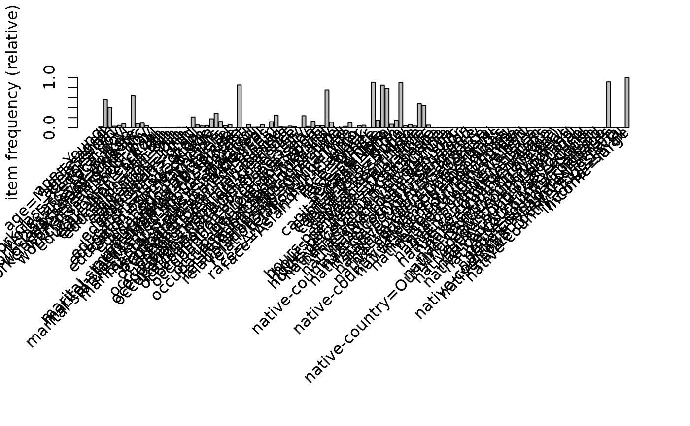
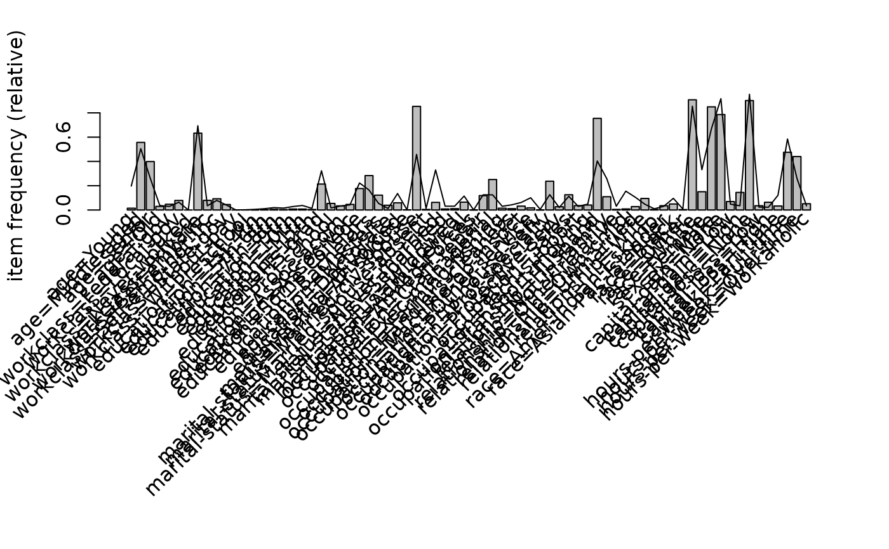
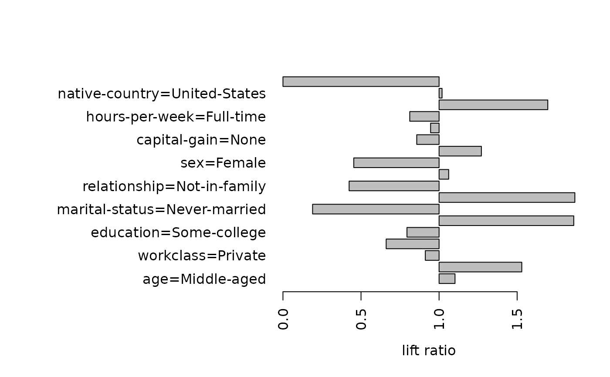

Provides the generic function itemFrequencyPlot() and the method to
create an item frequency bar plot for inspecting the item frequency
distribution for objects based on itemMatrix (e.g.,
transactions, or items in itemsets
and rules).
Usage
itemFrequencyPlot(x, ...)
# S4 method for class 'itemMatrix'
itemFrequencyPlot(
x,
type = c("relative", "absolute"),
weighted = FALSE,
support = NULL,
topN = NULL,
population = NULL,
popCol = "black",
popLwd = 1,
lift = FALSE,
horiz = FALSE,
names = TRUE,
cex.names = graphics::par("cex.axis"),
xlab = NULL,
ylab = NULL,
mai = NULL,
...
)Arguments
- x
the object to be plotted.
- ...
further arguments are passed on (see
graphics::barplot()from possible arguments).- type
a character string indicating whether item frequencies should be displayed relative of absolute.
- weighted
should support be weighted by transactions weights stored as column
"weight"in transactionInfo?- support
a numeric value. Only display items which have a support of at least
support. If no population is given, support is calculated fromxotherwise from the population. Support is interpreted relative or absolute according to the setting oftype.- topN
a integer value. Only plot the
topNitems with the highest item frequency or lift (iflift = TRUE). The items are plotted ordered by descending support.- population
object of same class as
x; ifxis a segment of a population, the population mean frequency for each item can be shown as a line in the plot.- popCol
plotting color for population.
- popLwd
line width for population.
- lift
a logical indicating whether to plot the lift ratio between instead of frequencies. The lift ratio is gives how many times an item is more frequent in
xthan inpopulation.- horiz
a logical. If
horiz = FALSE(default), the bars are drawn vertically. IfTRUE, the bars are drawn horizontally.- names
a logical indicating if the names (bar labels) should be displayed?
- cex.names
a numeric value for the expansion factor for axis names (bar labels).
- xlab
a character string with the label for the x axis (use an empty string to force no label).
- ylab
a character string with the label for the y axis (see xlab).
- mai
a numerical vector giving the plots margin sizes in inches (see `? par').
See also
Other itemMatrix and transactions functions:
abbreviate(),
c,
crossTable(),
duplicated(),
extract,
hierarchy,
image,
inspect(),
is.superset(),
itemFrequency(),
itemMatrix-class,
match(),
merge(),
random.transactions(),
sample(),
sets,
size(),
supportingTransactions(),
tidLists-class,
transactions-class,
unique()
Examples
data(Adult)
## the following example compares the item frequencies
## of people with a large income (boxes) with the average in the data set
Adult.largeIncome <- Adult[Adult %in% "income=large"]
## simple plot
itemFrequencyPlot(Adult.largeIncome)

## plot with the averages of the population plotted as a line
## (for first 72 variables/items)
itemFrequencyPlot(Adult.largeIncome[, 1:72],
population = Adult[, 1:72]
)

## plot lift ratio (frequency in x / frequency in population)
## for items with a support of 20% in the population
itemFrequencyPlot(Adult.largeIncome,
population = Adult, support = 0.2,
lift = TRUE, horiz = TRUE
)
